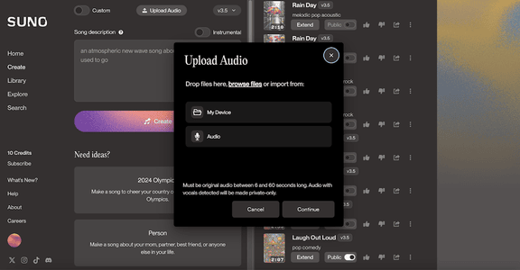
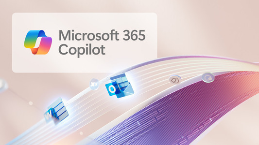
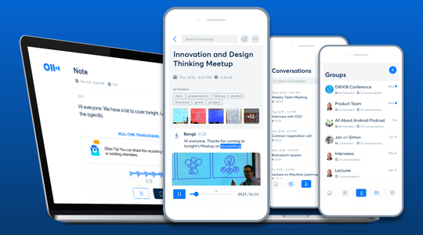
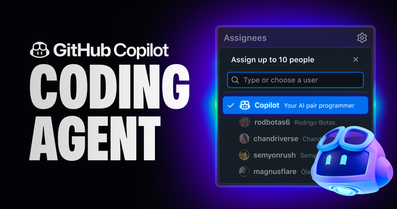

Umelá inteligencia (AI) už dávno nie je len sci-fi koncept. Dnes predstavuje súbor praktických nástrojov, ktoré dokážu obohatiť našu kreativitu, zefektívniť prácu a pomôcť nám v každodennom živote. Zabudnite na zložité technické definície – poďme sa pozrieť na konkrétne tipy a služby, ktoré môžete začať využívať ešte dnes.
Pre tvorbu obsahu (Text, Grafika, Video, Hudba)
Či už tvoríte pre radosť alebo pre prácu, tieto nástroje vám otvoria nové možnosti.
ChatGPT (OpenAI)

Absolútny základ a univerzálny pomocník. Dokáže písať texty, odpovedať na otázky, programovať, prekladať a mnoho ďalšieho.
Tip: Nebuďte v príkazoch (promptoch) vágni. Namiesto "Napíš niečo o autách," skúste "Napíš 5 zaujímavých faktov o histórii značky Porsche pre príspevok na Instagram. Text by mal byť pútavý a zrozumiteľný aj pre laikov."
Midjourney

Kráľ v oblasti generovania obrázkov. Vytvára neuveriteľne fotorealistické a umelecké vizuály na základe textového popisu.
Tip: Naučte sa používať parametre. Pridaním--ar 16:9na koniec príkazu určíte pomer strán a--style rawvám dá realistickejší, menej štylizovaný výsledok.
Krea AI
Tento nástroj posúva generovanie grafiky na novú úroveň. Dokáže v reálnom čase meniť obrázky podľa vášho kreslenia alebo pohybov myši a vylepšovať (upscalovať) vizuály s úžasnými detailmi.
Tip: Vyskúšajte funkciu "Live Canvas". Začnite jednoduchou skicou a sledujte, ako ju Krea v reálnom čase premieňa na detailný obraz. Je to skvelé na rýchle prototypovanie nápadov.
ElevenLabs
Lídrom v klonovaní a generovaní ľudského hlasu. Vytvára prirodzene znejúce audiostopy z textu vo viac ako 29 jazykoch, vrátane slovenčiny.
Tip: Pri klonovaní vlastného hlasu nahrajte niekoľko minút reči v rôznych emočných tónoch (pokojný, energický, zamyslený), aby AI lepšie zachytila vaše nuansy.
Suno / Udio
Tieto dva nástroje spôsobili revolúciu v tvorbe hudby. Stačí im zadať text a žáner (napr. "popová pieseň o letnej dovolenke v Tatrách") a oni v priebehu minúty vygenerujú kompletnú skladbu aj so spevom.
Tip: Ak sa vám páči refrén, ale sloha nie, v oboch nástrojoch môžete skladbu "predĺžiť" alebo vygenerovať alternatívny koniec a poskladať si tak finálnu verziu.
Pre prácu a produktivitu
Zbavte sa rutiny a sústreďte sa na to, čo je dôležité.
Notion AI

Váš digitálny mozog s turbom. Priamo vo vašich poznámkach dokáže vytvárať zhrnutia, prekladať, brainstormovať nápady alebo automaticky generovať tabuľky a zoznamy úloh.
Tip: Použite funkciu "Summarize" na dlhé zápisnice zo stretnutí. Okamžite vám vytvorí kľúčové body a akčné kroky, čím ušetríte desiatky minút.
Microsoft 365 Copilot
Integrovaný asistent priamo v aplikáciách ako Word, Excel, PowerPoint a Outlook. Pomáha písať emaily, analyzovať dáta v tabuľkách alebo vytvárať celé prezentácie z jediného dokumentu.
Tip: V PowerPointe zadajte príkaz "Vytvor prezentáciu na 10 slajdov z dokumentu [názov dokumentu].docx." Copilot automaticky načíta obsah a vytvorí návrh vrátane obrázkov a poznámok.
Otter.ai
Nepostrádateľný pomocník pre každé online stretnutie. Vytvára živý prepis konverzácie, identifikuje, kto čo povedal, a na konci doručí inteligentný zhrnutie.
Tip: Po stretnutí môžete kliknúť na ktorékoľvek slovo v prepise a Otter vám okamžite prehrá zvukovú nahrávku z daného momentu. Ideálne na overenie kontextu.
Pre programátorov a technických nadšencov
Píšte kód rýchlejšie a efektívnejšie.
GitHub Copilot
Najlepší priateľ programátora. Priamo v kóde navrhuje celé funkcie, dopĺňa riadky a pomáha riešiť zložité problémy. Je to ako programovať v páre s veľmi skúseným kolegom.
Tip: Namiesto písania kódu skúste napísať komentár, čo chcete urobiť (napr. // Funkcia, ktorá overí platnosť emailovej adresy pomocou regexu). Copilot vám následne napíše celý kód.
Amazon CodeWhisperer

Skvelá a často bezplatná alternatíva ku Copilotovi, ktorá ponúka robustné návrhy kódu a bezpečnostné skeny priamo vo vašom obľúbenom vývojovom prostredí (IDE).
Tip: Využite funkciu bezpečnostného skenovania na odhalenie zraniteľností vo vašom kóde skôr, ako sa dostane do produkcie.
Pre študentov a zvedavcov
Objavujte nové informácie a učte sa efektívnejšie.
Perplexity AI

Môžete si ho predstaviť ako kombináciu vyhľadávača a chatbota. Na vaše otázky odpovedá priamo, stručne a hlavne uvádza zdroje, z ktorých čerpal. Ideálne na rešerš a overovanie faktov.
Tip: Použite funkciu "Focus" na zúženie vyhľadávania len na akademické články, YouTube alebo Reddit, aby ste získali relevantnejšie odpovede pre váš kontext.
Google Gemini
Pokročilý AI model od Googlu, ktorý je skvelý na prácu s multimédiami. Dokáže analyzovať obsah obrázkov, videí a dokumentov.
Tip: Odfoťte si domácu úlohu z matematiky a opýtajte sa Gemini, aby vám krok po kroku vysvetlil postup riešenia. Je to skvelý nástroj na učenie.
Voicenotes

Jednoduchá aplikácia, ktorá nahrá vaše hlasové poznámky a okamžite ich prepíše na text, z ktorého následne vytvorí inteligentné zhrnutie.
Tip: Po prednáške alebo stretnutí si nahrajte 2-minútové zhrnutie svojich myšlienok. Aplikácia vám ich prepíše a usporiada, čím si vytvoríte prehľadné poznámky bez jediného ťuknutia do klávesnice.